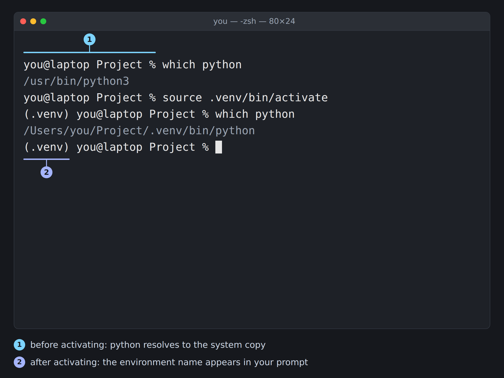

15 Virtual Environments
Prerequisites (read first if unfamiliar): Chapter 14, Chapter 11.
See also: Chapter 16, Chapter 17.
Purpose
You type pip install pandas and see Successfully installed pandas. Then you run your notebook, and the first cell says ModuleNotFoundError: No module named 'pandas'. You install it again; it’s “already satisfied.” The notebook still can’t find it. Or it goes the other way: you upgrade a package for this week’s assignment, and last semester’s project falls over with errors you’ve never seen.
If that has happened to you, nothing is wrong with you or your computer. Almost every computer has several copies of Python, each with its own installed packages, and nothing on the screen tells you which one is running. pip put pandas into one Python; your notebook is running another. Confusion about your environment is behind a large share of Python’s “it worked yesterday” bugs.
A virtual environment, or venv, is the fix: a private Python for one project, with its own packages, that you switch on while you work on it. This chapter shows you how to make one with Python’s built-in venv module, how to answer “which Python is running?” on any machine, how to get Jupyter and VS Code to use the environment you meant, how venv compares with conda, and when you need a container instead. Conda’s own commands and untangling version conflicts are in Chapter 14, though the diagnostic habits here work for conda too.
Why read this chapter
- You ran
pip install pandas, it saidSuccessfully installed, and your code still saysModuleNotFoundError: No module named 'pandas'. - pip refused to install anything with
error: externally-managed-environment, and the internet’s suggestions (sudo,--break-system-packages) sound like a bad idea, because they are. - Upgrading a package for one course broke a project from another course, and you’d like the two to stop interfering.
- Your prompt says
(.venv), yet the code is clearly running some other Python, or Jupyter and VS Code each seem to have picked a Python of their own. - On Windows, activating an environment fails with
running scripts is disabled on this system, and you’re not sure what’s safe to change. - A classmate sent you their project, and you want it running on your laptop in five minutes rather than an afternoon.
- Your instructor mentioned conda, Docker, or containers, and you want to know whether you need them yet (usually not).
Running theme: activate early, verify always
A venv that isn’t switched on isn’t helping you, so make activating it the first thing you do in a new terminal, and spend two seconds checking which Python is running before you install anything.
15.1 What a virtual environment actually is
Start with why your computer has more than one Python. A Mac may have Apple’s python3 from the developer tools, another from Homebrew, another from python.org, and another inside Anaconda or Miniforge; Windows machines collect copies the same way. Each has its own installed packages, and when you type python, your shell runs whichever copy it finds first on your PATH (see Chapter 11). Install with one Python, run with another, and you get ModuleNotFoundError for a package you know you installed.
Even with one Python, there’s a second problem. Say last semester’s project needs pandas 2 and this semester’s course uses pandas 3. One Python holds one version of pandas at a time, so every upgrade for one project is a risk to the other. Programmers call this tangle dependency hell.
A virtual environment solves both, and it’s less magical than it sounds. It’s a folder, usually .venv inside your project, holding three things:
- A
pythoncommand that points at one of your existing Pythons (a symbolic link at.venv/bin/pythonon macOS and Linux;.venv\Scripts\python.exeon Windows). - Its own
site-packagesfolder (.venv/lib/python3.12/site-packages, or.venv\Lib\site-packageson Windows), where everything you install goes. - A few
activatescripts that put the venv’s commands at the front of yourPATH.
That’s the whole trick. There’s no sandbox and no virtual machine: “activating” just means that when you type python or pip, the shell finds the venv’s copy first. Each venv has its own site-packages, so the pandas 2 project and the pandas 3 project each get their own pandas.
Three things follow. Isolation: breaking packages in one venv can’t touch another project, or the Python your operating system relies on. Reproducibility: a requirements.txt file records what’s installed, and a collaborator rebuilds the environment with one command. Disposability: the official venv documentation calls environments “disposable,” and means it as advice: if one gets into a strange state, delete .venv and make a new one.
One consequence surprises people: a venv remembers the full path it was made at, so it can’t be moved or copied. When we renamed a project folder after making its venv, activating still put (.venv) in the prompt, but which python pointed at the system Python. If you rename or move a project, recreate its .venv, and keep venvs out of synced folders (see Section 10.7).
15.2 Creating and activating a venv
venv comes with Python 3, so there’s nothing to install first. In a terminal, go to your project folder and run:
python -m venv .venv-m venv means “run Python’s venv module,” and .venv is the folder to create (the name VS Code and most tutorials expect). It prints nothing when it works; the new folder is the sign of success.
python: command not found on a Mac or Linux. Some systems have only python3. Run python3 -m venv .venv instead; once the venv is active, plain python works, because every venv includes one.
On Windows, python opens the Microsoft Store or isn’t found. Windows can put a placeholder python on your PATH that sends you to the Store. The Python docs’ troubleshooting table walks through the fix, starting with “Manage app execution aliases” in the Start menu. If you installed Python from python.org, py -m venv .venv often works when python doesn’t.
The virtual environment was not created successfully because ensurepip is not available. On Ubuntu, Debian, and WSL, venv ships in a separate system package. The error names the command that installs it (something like apt install python3.12-venv), which needs sudo.
A PermissionError, or a venv that acts strangely later. Work in a folder you own under your home directory, and not one that OneDrive, iCloud Drive, or Dropbox syncs (a sync client can fight with a venv’s thousands of small files).
Still stuck? See Chapter 2 for how to gather the evidence a helper will need.
Keep the venv out of git: it’s big, tied to your computer, and easy to rebuild. Add .venv/ to your project’s .gitignore (see Chapter 31). Since Python 3.13, venv also puts a tiny .gitignore inside .venv, but the line costs nothing and covers older Pythons.
Activate it. The command depends on your operating system and shell, which is why a command from a tutorial may not work for you. The venv documentation (in Further reading) has the full table; these are the ones you’re likely to need:
# macOS or Linux (bash or zsh)
source .venv/bin/activate
# Windows, PowerShell
.venv\Scripts\Activate.ps1
# Windows, Command Prompt (cmd)
.venv\Scripts\activate.bat
# Windows, Git Bash
source .venv/Scripts/activate(For the fish shell, it’s source .venv/bin/activate.fish.) Activation prints nothing either. What changes is your prompt, which now starts with the environment’s name in parentheses, and what python means (Figure 15.1).

(.venv) prefix is the visible signal, and which python3 is the check that confirms it: the interpreter now resolves inside the project rather than to the system copy.
On Windows, PowerShell may refuse to run the script, with a red error that says, in part, Activate.ps1 cannot be loaded because running scripts is disabled on this system. Nothing is broken. That’s PowerShell’s execution policy, a safety setting that blocks scripts by default on Windows desktops. The Python docs suggest allowing local scripts for your own account, which doesn’t need administrator rights:
Set-ExecutionPolicy -ExecutionPolicy RemoteSigned -Scope CurrentUserIf you’d rather not (or a school-managed laptop won’t let you), Set-ExecutionPolicy -ExecutionPolicy Bypass -Scope Process allows scripts in the current window only, or you can use .venv\Scripts\activate.bat from Command Prompt.
Strictly, you don’t have to activate: .venv/bin/python analysis.py (or .venv\Scripts\python analysis.py) uses the venv directly. Activation just lets you type plain python, and it’s the step people forget, which is why the next section’s checks matter.
Install packages with the venv active:
python -m pip install pandas numpy matplotlibWhy python -m pip rather than plain pip? python and pip are separate commands that your shell looks up separately, and they don’t always belong to the same Python. python -m pip means “the pip that belongs to this python,” so the package lands where python will look for it. It’s what the pip documentation recommends.
If you forget to activate and try to install into the system Python, a recent Mac (with Homebrew’s Python) or Ubuntu may stop you. Ubuntu’s version of the message looks like this (trimmed):
error: externally-managed-environment
× This environment is externally managed
╰─> To install Python packages system-wide, try apt install
python3-xyz, where xyz is the package you are trying to
install.
If you wish to install a non-Debian-packaged Python package,
create a virtual environment using python3 -m venv path/to/venv.
...
note: ... You can override this, at the risk of breaking your
Python installation or OS, by passing --break-system-packages.That’s PEP 668 at work: the operating system’s Python belongs to the operating system, and it’s telling you to use a venv. It’s right. --break-system-packages means what it says, and sudo pip install (the first panel of this chapter’s meme) risks the same damage. Activate your venv and install there.
Record your dependencies so anyone, including you on another computer, can rebuild the environment:
python -m pip freeze > requirements.txtpip freeze lists every package in the venv with its exact version, including the packages your packages depend on, so don’t be alarmed by the length: pandas, matplotlib, Jupyter, and ipykernel in a fresh venv in September 2026 came to 106 lines. Commit that file to git, and anyone can rebuild the environment with python -m pip install -r requirements.txt (the last worked example shows the whole sequence).
Deactivate when you’re done, or just close the terminal:
deactivateThat takes the venv off your PATH and restores your prompt, without touching its files. Every new terminal window or tab starts out unactivated, which is the most common reason a venv that worked an hour ago “stopped working.”
15.3 Which Python am I running?
This is the most useful question in the chapter, and answering it takes one line. Ask your shell which python it will run:
which python # macOS, Linux, Git Bash
where.exe python # Windows (Command Prompt or PowerShell)(Plain where python silently does nothing in PowerShell, where where means something else; where.exe or Get-Command python works.) Or ask Python itself, which works everywhere:
python -c "import sys; print(sys.executable)"sys.executable is the full path of the running Python. With the venv active, it should be inside your project, like /Users/you/project/.venv/bin/python. If you see something like /usr/bin/python3, /opt/homebrew/bin/python3, or a path in miniforge3 or anaconda3, the venv isn’t active, and the next pip install will land outside your project. (On a Mac with no plain python, which python may say python not found until you activate.) For a yes-or-no answer, compare sys.prefix, which points at the venv when one is running, with sys.base_prefix, the Python the venv was made from:
python -c "import sys; print(sys.prefix != sys.base_prefix)"That prints True inside a venv and False outside one.
The other half of the question is where a package is installed. pip show tells you:
python -m pip show pandaspandas prints its entire license in the middle of the output, so scroll past it to the Location: line (trimmed here):
Name: pandas
Version: 3.0.6
...
Location: /Users/you/project/.venv/lib/python3.12/site-packages
Requires: numpy, python-dateutilA Location: inside .venv means the package is in your venv; ~/.local/lib/python3.12/site-packages or /usr/lib/python3/dist-packages means it landed outside. And WARNING: Package(s) not found: pandas means this Python doesn’t have it at all, which may be your whole answer.
15.4 venv vs. conda
Sooner or later a course or lab will hand you a conda environment, and you may wonder whether you’ve been doing it wrong. You haven’t. Both make isolated environments; they differ in what they install and where they keep it.
venv + pip |
conda |
|
|---|---|---|
| Comes with Python | yes | no (install Miniforge or Miniconda) |
| Installs non-Python software | no | yes (CUDA, GDAL, R, compilers) |
| Packages come from | PyPI | conda channels such as conda-forge |
| Environment lives | in the project (.venv/) |
in a central envs folder, by default |
| Best for | most coursework and pure-Python projects | heavy compiled dependencies, mixed-language stacks |
For most projects, start with venv: it’s already on your computer, keeps the environment next to the code, and works the same everywhere. Reach for conda when you need compiled software that’s painful to install with pip (GPU builds of PyTorch, GDAL for geographic data, many bioinformatics tools), or when your course has standardized on it. You can pip-install PyPI packages into a conda environment, but mixing the two has rules (see Chapter 14). The community’s Miniforge installer sets conda up with conda-forge as the default channel, and conda’s guide to managing environments covers the commands.
Both can live on one computer; just don’t stack them. If conda activates base in every new terminal (you’ll see (base) in your prompt), run conda deactivate before activating a venv, so one environment is in charge. You may also meet uv, a much faster installer; it makes the same kind of .venv folder, so this chapter still applies.
15.5 Jupyter and venvs
Here’s the classic trap: you activate your venv, install pandas, start Jupyter, and import pandas fails anyway. A notebook doesn’t run code with “the terminal’s Python.” It uses a kernel, a separate Python process that Jupyter starts, and the kernel may belong to a different Python from the one you installed into.
The fix is to register your venv as a kernel. With the venv active, install ipykernel and register it under a name you’ll recognize:
python -m pip install ipykernel
python -m ipykernel install --user --name project-venv --display-name "Python (project-venv)"The second command answers with a line like this (the folder differs on macOS and Windows):
Installed kernelspec project-venv in /home/you/.local/share/jupyter/kernels/project-venv--name is Jupyter’s internal label; --display-name is what menus show. In JupyterLab or VS Code, pick Python (project-venv) as the kernel, then check in the first cell that the notebook really runs your venv:
import sys
print(sys.executable)If the path ends in .venv/bin/python (or .venv\Scripts\python.exe), you’re set; otherwise, switch kernels. jupyter kernelspec list shows every kernel Jupyter knows about, and jupyter kernelspec uninstall project-venv removes one. A kernel remembers the full path to the venv’s Python, so it survives recreating .venv in place, but if you move the project, register it again.
In a notebook that needs one more package, %pip install seaborn in a cell installs into the kernel’s Python, exactly where you want it. Chapter 16 has more on kernels.
15.6 VS Code and venvs
VS Code chooses a Python too, without asking your terminal, and it usually chooses well. According to VS Code’s Python environments guide, when you haven’t picked one, it prefers a .venv or venv folder in the project over the system Python, uses it to run and debug code and for autocomplete, and activates it in new terminals.
The chosen environment’s Python version shows in the status bar at the bottom of the window. If it’s wrong, or VS Code missed a venv you just made, click it, or open the Command Palette (Ctrl+Shift+P, or Cmd+Shift+P on a Mac), run Python: Select Interpreter, and pick the entry whose path contains your project’s .venv. Terminals opened before the switch keep the old environment, so open a new one and check with which python.
Notebooks in VS Code pick their kernel separately, from the picker at the notebook’s top right (see VS Code’s kernel management guide); choose your venv there, and run the sys.executable check once.
15.7 When venvs are not enough: containers
A venv isolates your project’s Python packages, and nothing else: not Python itself, the operating system, or the non-Python software some packages need, like the geographic libraries under GeoPandas or a database. For most coursework that’s fine. But you may meet a project that works on your machine and fails on a teammate’s because the difference is below Python. That’s what a container solves.
A container packages a whole user-space environment: a minimal Linux system, its libraries, a Python interpreter, your packages, and your code. If a venv pins your packages, a container pins nearly everything above the operating system’s kernel, which it shares with the machine it runs on. The same image runs the same way on your laptop, a teammate’s, a university server, or a cloud service, with two caveats. On a Mac or Windows laptop, Docker Desktop runs Linux containers inside a small virtual machine. And because containers share the host’s kernel, an image built for one processor needs emulation or a multi-platform build to run on another (say, from an Apple silicon Mac to a typical amd64 server). The tool you’ll meet most is Docker, whose explanation of what a container is is a good first read.
A minimal Dockerfile
A container runs from an image, built from a recipe called a Dockerfile at the root of your project. For a simple Python project it’s short:
# Dockerfile
FROM python:3.12-slim
WORKDIR /app
COPY requirements.txt .
RUN python -m pip install --no-cache-dir -r requirements.txt
COPY . .
CMD ["python", "src/pipeline.py"]Each of the six instructions does one job. FROM picks a starting image, here the official Python image with Python 3.12 on a minimal Debian Linux. WORKDIR sets the folder inside the container. The first COPY brings in just requirements.txt, and RUN installs the packages. The second COPY brings in your code, and CMD says what to run at start. Copying requirements.txt first isn’t fussiness: Docker caches each step, so when only your code changes, the next build skips the slow install. The Dockerfile reference documents every instruction.
Build the image, give it a name with -t, and run it:
docker build -t my-project .
docker run --rm my-project--rm deletes the container when it exits, which suits one-off runs. For a shell inside the container, the rough equivalent of activating an environment, add -it and ask for bash:
docker run --rm -it my-project bashTwo more options come up constantly. To edit code on your computer and run it in the container, mount your project folder with a bind mount: docker run --rm -it -v "$PWD":/app my-project bash. To reach a server in the container, such as JupyterLab, publish its port with -p host:container: docker run --rm -p 8888:8888 my-project jupyter lab --ip=0.0.0.0 --allow-root (JupyterLab must be in requirements.txt, and it refuses to run as root, this image’s default user, without --allow-root).
Docker Compose for multi-service projects
Some projects need several programs running at once, such as your code plus a database. Docker Compose describes them in one file, compose.yaml, and starts them together with docker compose up:
services:
app:
build: .
depends_on:
db:
condition: service_healthy
environment:
DATABASE_URL: postgres://user:pass@db:5432/app
db:
image: postgres:16
environment:
POSTGRES_USER: user
POSTGRES_PASSWORD: pass
POSTGRES_DB: app
healthcheck:
test: ["CMD-SHELL", "pg_isready -U user -d app"]
interval: 5s
retries: 5app is built from your Dockerfile, and db is the official PostgreSQL image. Services reach each other by service name, which is why the database’s address is simply db. The healthcheck and condition: service_healthy lines are easy to leave out and matter: plain depends_on only starts the database first and doesn’t wait until it accepts connections, so your app can crash on its first query (startup order explains). These passwords are fine for a practice database on your laptop; for anything real, keep them out of the file (see Chapter 34). Older tutorials name the file docker-compose.yml, which Compose still reads.
The first time a teammate clones your project, types docker compose up, and has everything running with no other setup, it feels like magic.
When to actually reach for a container
Containers are one more layer to learn and debug, and reaching for them too early creates more friction than it removes. You probably need one when:
- The same environment has to run on different operating systems, and the differences are below Python, in system libraries a venv doesn’t pin.
- Your code depends on system software that’s tedious to install: PostGIS, FFmpeg, headless Chromium for scraping, a specific CUDA version for GPU work.
- Your code runs alongside a database or queue that every teammate should get the same way.
- You’re deploying to a server or the cloud, where containers are the common format for “run this somewhere.”
A venv is plenty for:
- Pure-Python coursework with a short
requirements.txt. - Analysis notebooks that read local files and make figures.
- Anything you only ever run on your own laptop for one semester.
If you’re not sure, start with a venv. You can add a Dockerfile later; taking the complexity back out is harder.
15.8 Stakes and politics
In September 2026, this chapter’s first worked example (pandas, matplotlib, and Jupyter in a fresh venv) came to 106 packages and about 500 MB on disk. On a laptop with campus Wi-Fi, that’s a coffee break. On a capped phone hotspot, a shared lab computer where you can’t install software, or a school-managed Chromebook where you can’t install Python at all, it’s a wall. “Just make a venv” quietly assumes a machine you control, disk space to spare, and a data connection nobody meters.
Containers move the question from your laptop to a company. Docker Engine is open source, and container images follow the vendor-neutral Open Container Initiative standards. But the easy on-ramp for Mac and Windows users, Docker Desktop, is licensed by Docker, Inc.: free for personal use, education, and small businesses, and a paid subscription for larger companies and government agencies. A workflow you learn for free in a course can come with a license question at your first job, which is exactly why it’s worth knowing the standard is open and that alternatives such as Podman exist.
See Chapter 8 for the broader framework. The concrete prompt to carry forward: when a tutorial says “just create a venv” or “just run it in a container,” ask which prerequisites (bandwidth, disk, admin rights, a paid license) that just is hiding.
15.9 Worked examples
Starting a new project from scratch
You’re starting a term project with pandas and matplotlib in notebooks. The order matters: make the venv, activate it, and only then install.
mkdir term-project && cd term-project
python -m venv .venv
source .venv/bin/activate # or .venv\Scripts\Activate.ps1 on Windows
python -m pip install --upgrade pip
python -m pip install pandas matplotlib jupyter ipykernel
python -m pip freeze > requirements.txt
echo ".venv/" >> .gitignore
git init && git add requirements.txt .gitignore
git commit -m "Initial environment"Then register the venv as a kernel and start JupyterLab from inside it:
python -m ipykernel install --user --name term-project --display-name "Python (term-project)"
jupyter labThe new kernel appears in JupyterLab’s launcher. Open a notebook with it, run the sys.executable check once, and you’re ready.
Diagnosing “it worked yesterday”
You open a terminal the next morning, run python analysis.py, and get:
Traceback (most recent call last):
File "/Users/you/term-project/analysis.py", line 1, in <module>
import pandas as pd
ModuleNotFoundError: No module named 'pandas'You installed pandas yesterday, so this feels like gaslighting. It isn’t; work through three checks in order.
First, is the venv active? No (.venv) at the start of your prompt means a new terminal nobody activated. Run source .venv/bin/activate and try again. Usually, that’s the whole story.
Second, if the prompt says (.venv) and it still fails, ask which Python is running:
which python
python -c "import sys; print(sys.executable)"If the path doesn’t contain your project’s .venv, activation isn’t doing what the prompt claims. Perhaps the project folder was renamed or moved after the venv was made: run deactivate, delete .venv, recreate it, and reinstall from requirements.txt. Or this terminal was opened before you selected the venv in VS Code; open a new one.
Third, if the right Python is running, ask whether it has pandas:
python -m pip show pandasIf it says WARNING: Package(s) not found: pandas, yesterday’s install went into a different Python, probably from a terminal where the venv wasn’t active. Install into this one:
python -m pip install -r requirements.txtA collaborator clones your project
Because you committed requirements.txt and not .venv/, a teammate rebuilds the environment on their own machine:
git clone https://github.com/you/term-project.git
cd term-project
python -m venv .venv
source .venv/bin/activate
python -m pip install -r requirements.txtFive commands, and their venv has exactly the versions you committed: when we tried it with the term project above, pip freeze in the new venv matched requirements.txt line for line.
15.10 Templates
.gitignore entries for a venv project:
.venv/
__pycache__/
*.pyc
.ipynb_checkpoints/
.pytest_cache/requirements.txt, as pip freeze wrote it after installing pandas and matplotlib into a fresh venv in September 2026 (the other ten are what those two need):
contourpy==1.3.3
cycler==0.12.1
fonttools==4.66.0
kiwisolver==1.5.1
matplotlib==3.11.2
numpy==2.4.6
packaging==26.3
pandas==3.0.6
pillow==12.3.0
pyparsing==3.3.3
python-dateutil==2.9.0.post0
six==1.17.0Exact pins are reproducible but brittle: they may not install on a much newer Python. For coursework and analysis, pin, because you want the same results next month. For a library others will install alongside their own packages, use looser constraints such as pandas>=2.0. pip’s requirements file format guide lists everything a line can say.
15.11 Exercises
- Create a fresh venv in an empty folder, activate it, and install
pandas. Runpython -m pip show pandasand confirm theLocation:line is inside your venv. - Write down the output of
which python(orwhere.exe pythonon Windows) before and after activating a venv. What changed, and why? - Break it on purpose: open a new terminal, don’t activate the venv, and run
python -c "import pandas". Read the traceback (see Chapter 7). Then activate the venv and run it again. - Pick an existing project of yours that doesn’t use a venv. Create one, install everything the project needs, freeze a
requirements.txt, and commit it to git. - Register a Jupyter kernel for a venv, open a notebook with it, and confirm with
import sys; print(sys.executable)that the notebook is running your venv’s Python and not the system one. Then find it injupyter kernelspec list. - Clone a classmate’s project (or your own, on another computer) and get it running using only
git clone,python -m venv, activation, andpython -m pip install -r requirements.txt. Time yourself: once the packages download, it should take a few minutes. - Delete your
.venv/folder and recreate it fromrequirements.txt. Confirm the project still runs. This is the real test of whether your project is reproducible.
15.12 One-page checklist
- Every project gets its own venv:
python -m venv .venvin the project folder. - Add
.venv/to.gitignore. Never commit a venv. - Activate in every new terminal:
source .venv/bin/activate(or.venv\Scripts\Activate.ps1on Windows). - Check with
which pythonorpython -c "import sys; print(sys.executable)"before anypip install. - Use
python -m pip install, not barepip install, and neversudo pip. - Freeze dependencies to
requirements.txtand commit that file. - Moved or renamed the project? Delete
.venvand recreate it. - Register the venv as a Jupyter kernel if you use notebooks.
- Point VS Code (or your editor) at the venv’s interpreter.
- When something is weird, the first question is always “which Python is running?”
- Python docs,
venv: Creation of virtual environments — the official reference, including the table of activation commands for every shell and a clear explanation of how venvs work. - Python Packaging User Guide, Install packages in a virtual environment using pip and venv — a step-by-step tutorial with macOS, Linux, and Windows commands side by side.
- pyenv, Simple Python Version Management — the standard tool for installing several Python versions on one machine; pairs naturally with venv when a project needs a Python other than your default.
- Real Python, Python Virtual Environments: A Primer — a longer tour of venv internals, common pitfalls, and alternatives.
- Docker, Get started — the official walkthrough for building, running, and sharing containers.
- Open Container Initiative, opencontainers.org — the vendor-neutral standard underneath Docker; worth knowing about when you wonder whether containers require Docker specifically (they don’t).
- Play with Docker, labs.play-with-docker.com — a browser sandbox that gives you a temporary Docker host, so you can experiment without installing anything.